21 November 2026 · Audit findings
Catalogue portraits use prop detail and each model’s override. GLB portraits show individual source models in isolation. Track kits show their catalogue counterpart. Counts describe the model before runtime batching and distance simplification.
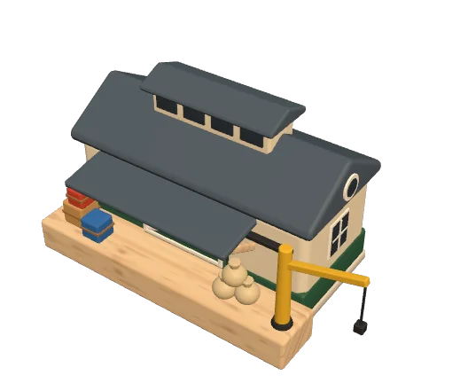
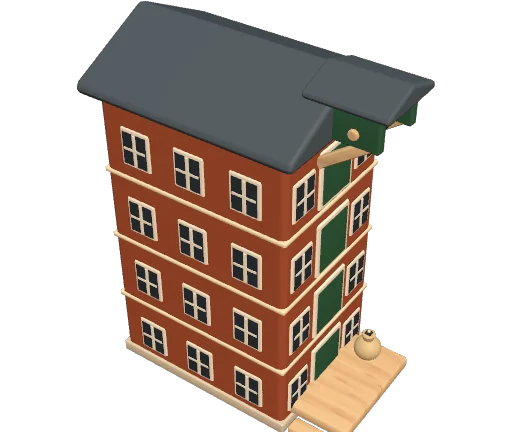
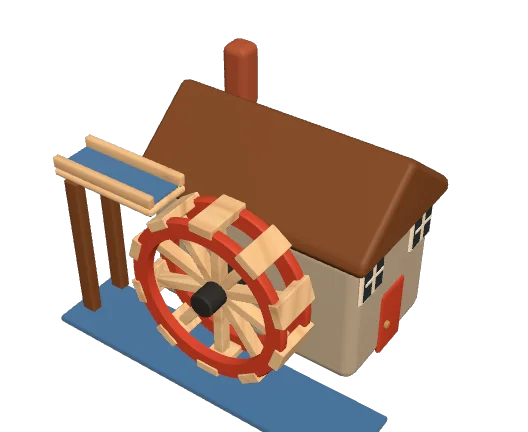
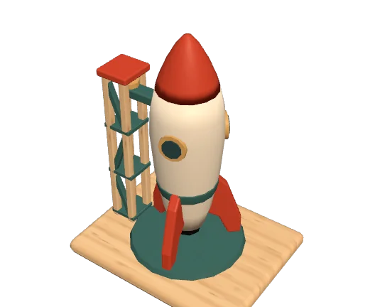
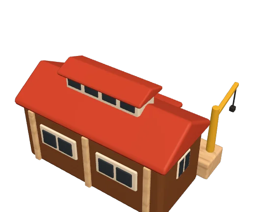
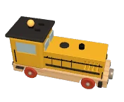
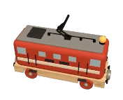
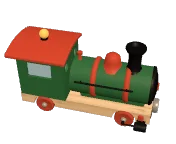
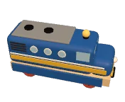
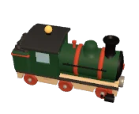
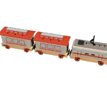
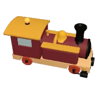
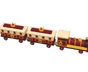
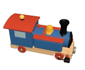
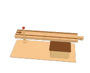
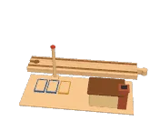
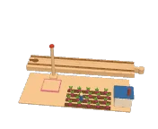
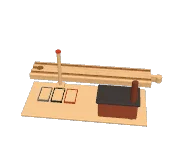
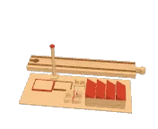
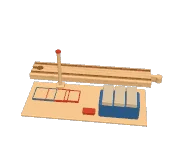
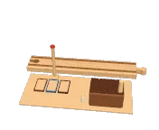
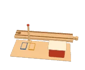
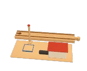
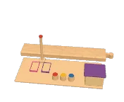
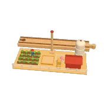
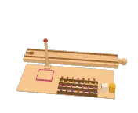
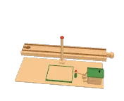
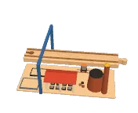
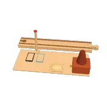
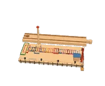
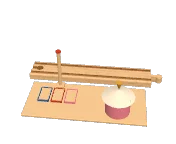
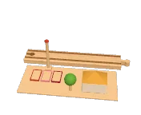
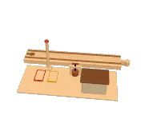
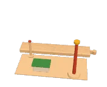
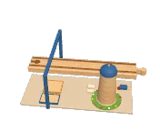
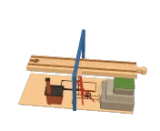
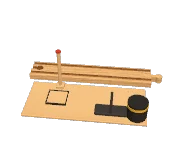
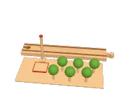
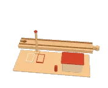
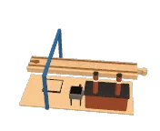
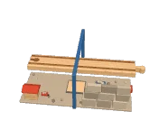
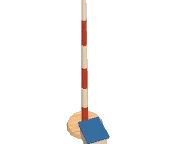
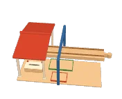
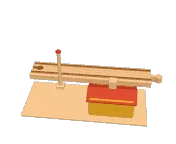
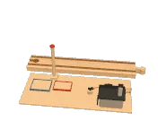
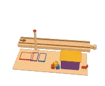
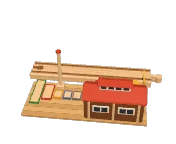
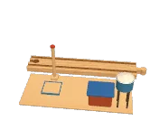
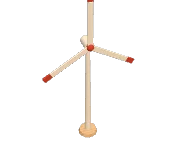
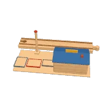